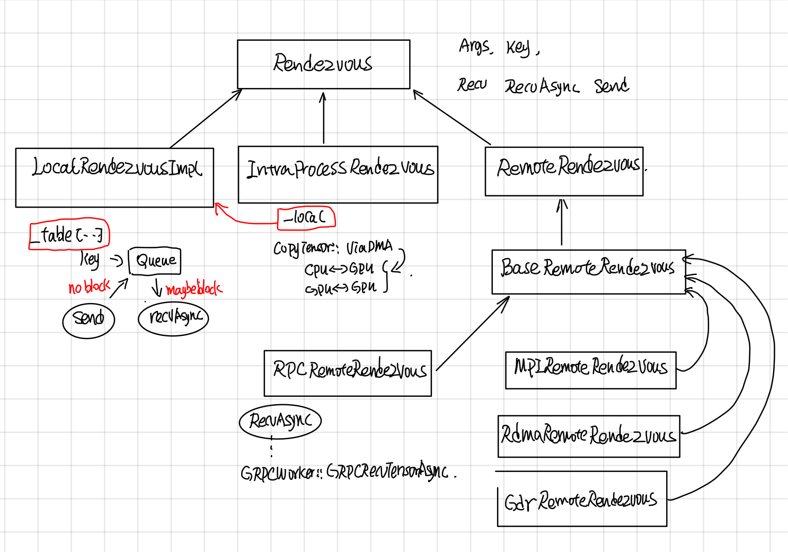
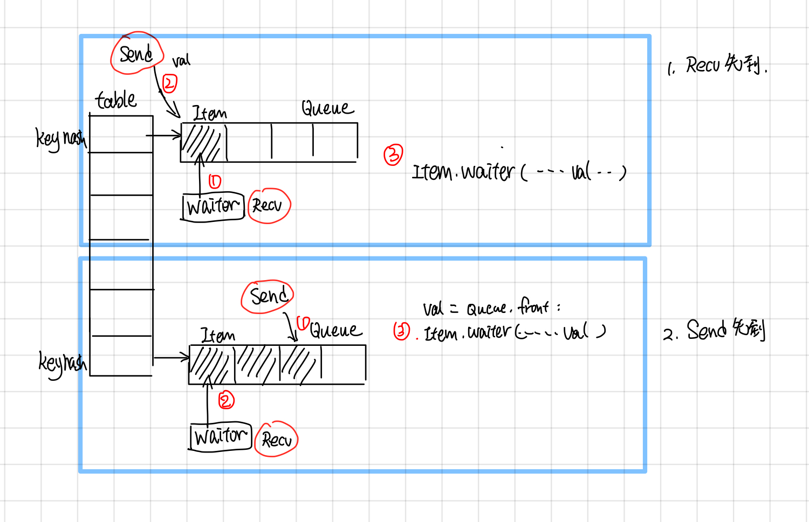
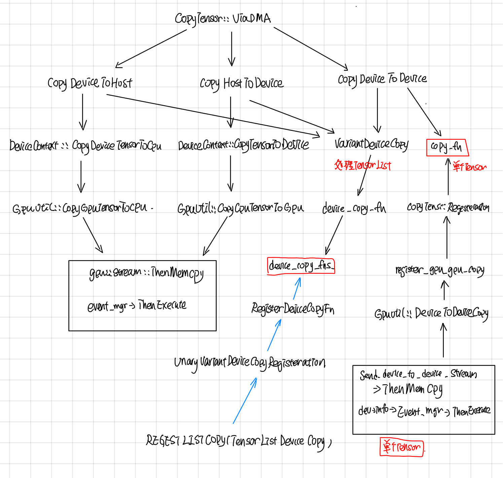
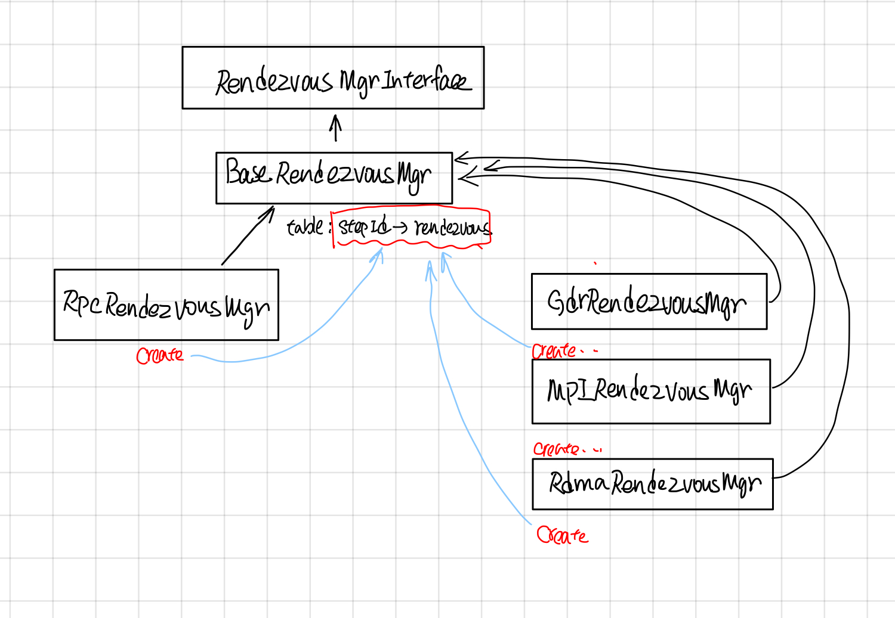

Tensorflow Rendezvous
摘要
Rendezvous负责在Send和Recv node之间传递tensor, tensor的传递可能会跨设备(cross device), 也可能跨主机(GRPC，MPI，Rdam）等。如何提供统一简洁的接口，并同时实现不同场景下tensor高效传递是关键，Rendezvous功能上主要涉及以下两点：
- Send操作不会被block，而Recv操作可能会block，一直等到有tensor，才会返回或者调用异步的callback。
- 由于send 和recv node可能在同一个worker的不同device上，也有可能在不同worker的不同device上，所以Rendezvous又分为LocalRendezvous, IntraProcessRendezvous, RemoteRendezvous 以对应不同的场景。
Rendezvous
继承关系
Rendezvous中各个层级实现功能如下：
- LocalRendezvor实现了核心Send和Recv操作，每个key对应了一个queue, send根据key放到相应的队列里，recv根据key去对应的队列取。
- IntraProcessRendezvou使用CopyTensor::ViaDMA处理了不同device间的copy问题，其send, recv还是会交由LocalRendezvous去做。
- RpcProcessRendezvous实现了将woker的本地tensor(tensor如果在GPU上的话，需要先从GPu上copy到内存中）通过grpc buffer传递给调用者。

LocalRendezvous: Send and Recv
LocalRendezvous 实现了send和recv最基本的操作，按照send请求和recv请求顺序做了不同的处理：
-
如果recv先到，就新创建一个item，把recv请求放到queue里面，等待send tensor抵达的时候，调用item.waiter回调函数通知recv， tensor已经到了。
-
如果send先到，就新创建一个item, 把item放到queue里面，等recv请求到达的时候，从队列中取出最开头的一个，调用recv.waiter回调函数，通知tensor已经到了。这里send请求就是简单的把tensor放入key对应的队列中，并不会block住。

IntraProcessRendezvous
IntraProcessRendezvous 用于处理进程内的通信, 他的send和recv是委托给LocalRendezvous, 在Local的RecvAsync的回调函数中，它会调用SameWokerRecvDone, 使用CopyTensor::ViaDMA处理跨device通信问题。
void IntraProcessRendezvous::SameWorkerRecvDone(...)
//other code ...
//case 1：都在内存中，直接用使用tensor的operator=
if (src_host && dst_host) {
*out = in;
done(Status::OK());
return;
}
//other code ...
//case 2: 使用ViaDMA处理不同device之间的tensor通信
CopyTensor::ViaDMA(parsed.edge_name, send_args.device_context,
CopyTensor::ViaDMA
CopyTensor::ViaDMA处理了device之间的copy tensor。 Tensor的copy有3个方向：
- HOST_TO_DEVICE
- DEVICE_TO_HOST
- DEVICE_TO_DEVICE
从下图可以看出这些操作最终调用的还是stream_executor的ThenMemcpy所封装的函数。

VarientDeviceCopy这个处理数据是DT_VARIENT结构的Tensor的，最后调用的是TensorListeDeviceCopy函数，这个函数所对应的deviceCopyFn就是stream_executor所封装的Memcpy, 这里的VarientDeviceCopy和copyfn都采用了static registor的模式（这种模式在tensorflow中用的非常多）。
static Status TensorListDeviceCopy(
const TensorList& from, TensorList* to,
const UnaryVariantOpRegistry::AsyncTensorDeviceCopyFn& copy) {
to->element_shape = from.element_shape;
to->element_dtype = from.element_dtype;
to->tensors.reserve(from.tensors.size());
for (const Tensor& t : from.tensors) {
Tensor tmp(t.dtype());
TF_RETURN_IF_ERROR(copy(t, &tmp));
to->tensors.push_back(tmp);
}
return Status::OK();
}
BaseRemoteRendezvous
BaseRemoteRendezvous 的RecvAsync中会检查是否是同一个recv 和sender是否在同一个worker上。
// 检查是否是同一个worker
bool BaseRemoteRendezvous::IsSameWorker(DeviceNameUtils::ParsedName src,
DeviceNameUtils::ParsedName dst) {
return DeviceNameUtils::IsSameAddressSpace(src, dst);
}
如果是同一个worker的话就采用类似IntraProcessRendezvous方式来处理，否则需要通过远程调RecvFromRemoteAsync。
void BaseRemoteRendezvous::RecvAsync(const ParsedKey& parsed,
//other code ..
//case1: 是同一个worker, 说明在本地上
if (IsSameWorker(parsed.src, parsed.dst)) {
local_->RecvAsync(
parsed, recv_args,
[this, parsed, done](
//other code ...
//in recv done callback
SameWorkerRecvDone(parsed, send_args, recv_args, in, out,
} else {
//case2: 不是同一个worker需要用RPC 去取。
RecvFromRemoteAsync(parsed, recv_args, std::move(done));
}
RemoteRendezvous中加了个一个Initialize的接口, 这样绑定了一个WorkerSession, 然后在SameWorkerRecvDone的时候，通过这个workerSession去找到对应的device。
Status BaseRemoteRendezvous::Initialize(WorkerSession* session) {
//other codes...
}
在SameWorkerRecvDone中通过workerSession找到src_device和dst_device
void BaseRemoteRendezvous::SameWorkerRecvDone(
//other code ...
Status s = sess->device_mgr->LookupDevice(parsed.src_device, &src_device);
//other code ...
s = sess->device_mgr->LookupDevice(parsed.dst_device, &dst_device);
//other code ..
//通过ViaDMA实现各个device之间的copy
CopyTensor::ViaDMA(parsed.edge_name, send_args.device_context,
RpcRemoteRendezvous
RpcRemoteRendezvous在BaseRemoteRendezvous的基础上，实现了RecvFromeRemoteAsync的功能, 首先找到send所在的src_worker, 然后通过rpc调用去取的远程src_worker上的tensor。
void RpcRemoteRendezvous::RecvFromRemoteAsync(
//other code..
RpcRecvTensorCall* call = get_call_freelist()->New();
//1. 找到远程的src_worker
WorkerSession* sess = session();
WorkerInterface* rwi = sess->worker_cache->CreateWorker(call->src_worker_);
//2. 找到要copy到的device
s = sess->device_mgr->LookupDevice(parsed.dst_device, &dst_device);
//other code ..
//3. Grpc call
call->Init(rwi, step_id_, parsed.FullKey(), recv_args.alloc_attrs, dst_device,
recv_args, std::move(done));
call->Start([this, call]() {
//other code ..
在RpcRecvTensorCall中会call worker的RecvTensorAsync。
void StartRTCall(std::function<void()> recv_done) {
//other code
wi_->RecvTensorAsync(&opts_, &req_, &resp_, std::move(cb));
}
中间经过worker service，最终会去call GrpcWorker::GrpcRecvTensorAsync.
void GrpcWorker::GrpcRecvTensorAsync(CallOptions* opts,
// Case 1: 如果目标tensor在GPU上的话，需要先cp到host上
if (src_dev->tensorflow_gpu_device_info() && (!on_host)) {
StatusCallback copy_ready = [response, done, copy, is_dead](const Status& s) {
//other code ..
// copy到response buffer中
grpc::EncodeTensorToByteBuffer(is_dead, *copy, response);
done(s);
}
GPUUtil::CopyGPUTensorToCPU(src_dev, send_dev_context, &val, copy, copy_ready);
} else {
//Case 2: 在Host上直接cp到response的buffer中。
grpc::EncodeTensorToByteBuffer(is_dead, val, response);
done(Status::OK());
}
}
RendezvousMgr
RendezvousMgr的作用是维护一个从step_id到Rendezvous的映射。
RendezvousMgr keeps track of a set of local rendezvous instances. All tensors sent by this worker are buffered in a RendezvousMgr until the tensor is received. Each global unique "step_id" corresponds to one local rendezvous instance managed by a RendezvousMgr.
RendezvousMgr的继承关系如下

映射的table在BaseRendezvousMgr中。
//BaseRendezvousMgr的数据成员
typedef gtl::FlatMap<int64, BaseRemoteRendezvous*> Table;
mutex mu_;
Table table_ GUARDED_BY(mu_);
它的派生类比如RpcRendezvousMgr通过override它的Create函数来创建自己版本的rendezvous。
//BaseRendezvousMgr 的CreateRendezvous的纯虚函数
protected:
virtual BaseRemoteRendezvous* Create(int64 step_id,
const WorkerEnv* worker_env) = 0;